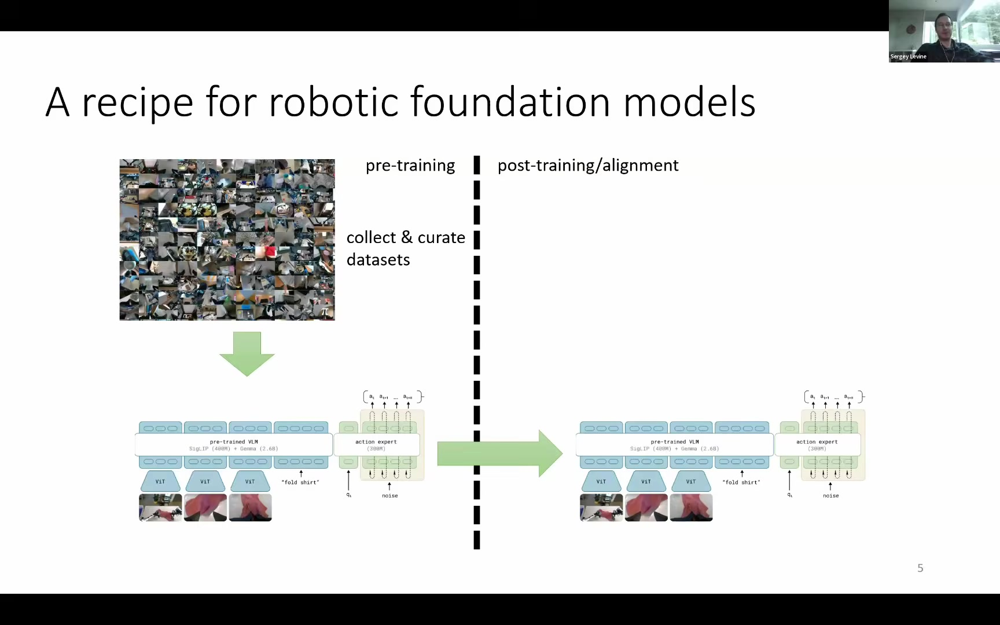
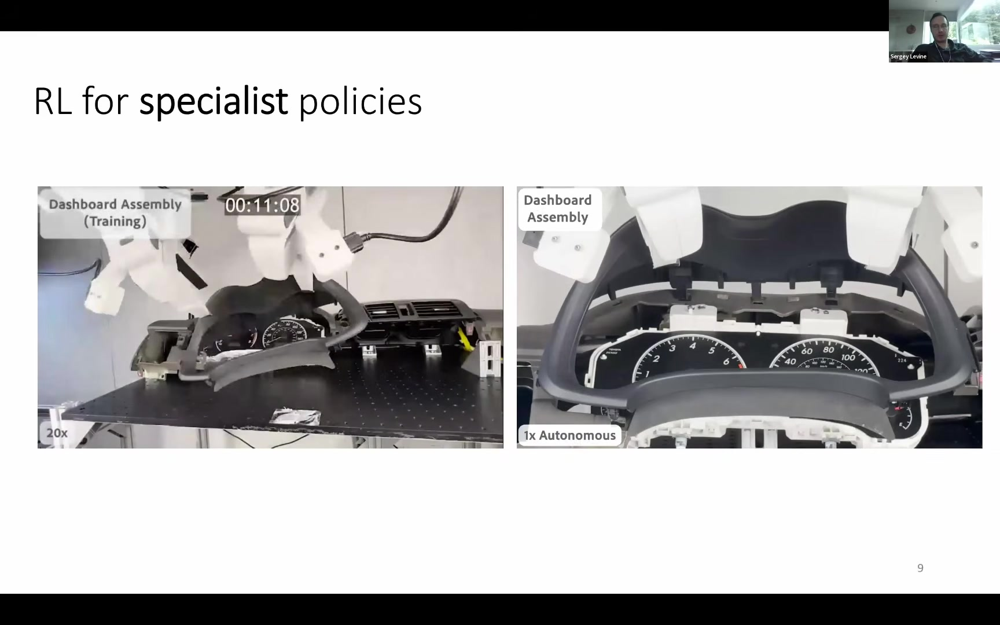
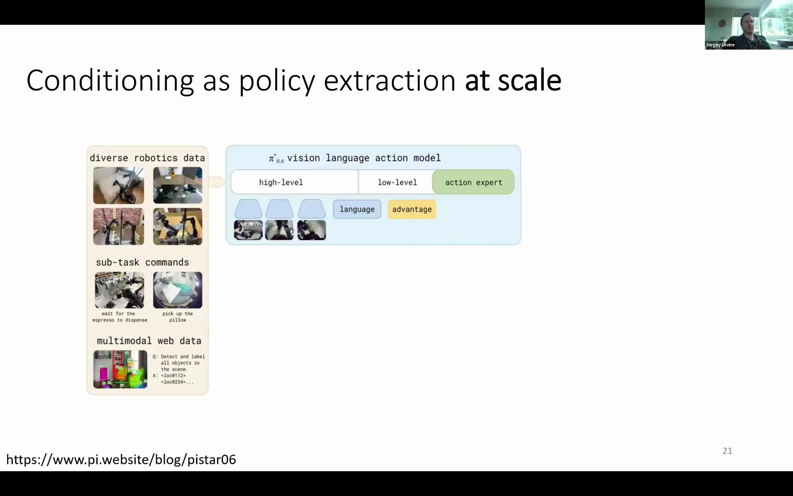

Generalist · VLA
넓게 알고, 일반화한다
대규모 데이터에서 지식·언어 이해·행동 사전확률을 습득한다. RL 토큰과 기본 액션을 통해 스페셜리스트의 탐색을 부트스트랩한다.
Pre-training
Common Crawl·Wikipedia 같은 대규모 데이터를 선별하고 학습해 사실과 패턴을 폭넓게 축적한다. 특정 과제를 푸는 것보다 지식의 기반을 만드는 단계다.
Post-training / Alignment
고품질 SFT 데이터와 RLHF 같은 알고리즘을 통해 지식을 실제 문제 해결에 배치한다. 로봇에서는 이 단계가 속도와 숙련도를 결정한다.


샌드박스에서 학습하면 결국 샌드박스에 입력된 세계를 학습한다. 마지막 성능을 결정하는 post-training일수록 분포 변화에 더 민감하다.
| 실세계 RL | 시뮬레이션 / 샌드박스 | |
|---|---|---|
| 장점 | 실제 마찰·변형·오차를 직접 학습 | 병렬화와 계산량 확장이 쉬움 |
| 제약 | 극도로 높은 샘플효율 필요 | 시뮬레이터가 표현한 것만 학습 |

Algorithm
Soft Actor-Critic 기반의 off-policy 방식. 데모를 리플레이 버퍼에 섞어 실제 로봇에서도 빠르게 학습한다.
Observation & reward
손목 카메라와 사전학습 비전 인코더를 사용하고, 이진 이미지 분류기로 과제 완료 보상을 준다.
Optional boost
사람이 교정한 행동도 리플레이 버퍼에 바로 추가할 수 있어 초기 탐색과 실패 복구를 크게 돕는다.


| 과제 | RL | BC |
|---|---|---|
| 물체 재배치 | 7.53초 | 18.94초 |
| 케이블 라우팅 | 4.08초 | 13.58초 |
| PCB 부품 삽입 | 5.22초 | 10.14초 |

사전학습 기반이 없으므로 학습 환경 밖으로 일반화하지 못한다. 뛰어난 숙련자지만, 새로운 과제에는 다시 학습해야 한다.
Ethernet·VGA·USB 삽입 정책을 각 환경에서 정밀하게 숙달한다.
성공 결과뿐 아니라 상태에 따른 폐루프 행동 경험을 데이터로 만든다.
OpenVLA는 LoRA, Octo는 전체 파인튜닝으로 흡수해 보지 못한 커넥터에도 일반화한다.


RL 롤아웃은 같은 개수의 성공한 인간 데모보다 파운데이션 모델 학습에 더 효과적이었다. RL 정책은 상태 변화에 반응하는 마르코프 정책의 경험을 제공하기 때문이다.
Final policy only
Entire RL buffer

좋은 데이터와 나쁜 데이터를 함께 학습할 수 있다면 별도 작은 actor 없이 로봇 파운데이션 모델 자체를 RL actor로 사용할 수 있다.
Policy
SigLIP 400M + Gemma 4B + action expert 860M. 언어 서브태스크, 웹 데이터, chain-of-thought와 함께 이산·연속 액션을 출력한다.
Value model
SigLIP 400M + Gemma 270M + value head로 진행도를 추정한다. 실수 시 value가 급락하고 복구 시 다시 상승한다.


빨래 개기 2종, 에스프레소 만들기, 박스 조립에서 pretrain → offline RL → SFT → 반복 RL을 비교했다.
Throughput
최종 RL 반복 정책은 네 과제 중 세 과제에서 처리량을 약 2배로 끌어올렸다.
Reliability
에스프레소와 박스 접기 데모는 몇 시간 동안 연속으로 작동했다.

데모와 모든 스페셜리스트의 자율 데이터를 함께 학습하고, 에피소드 품질과 길이까지 조건으로 사용한다.
인간 데모 + 성공·실패·복구를 포함한 스페셜리스트 자율 롤아웃.
언어 지시, 서브골 이미지, 품질 별점, 에피소드 길이를 학습 입력으로 제공.
추론 시 상위 정책·월드 모델·원하는 메타데이터로 행동 특성을 선택.

다양한 데이터로 로봇 파운데이션 모델의 일반적 행동 prior를 강화한다.
제너럴리스트의 표현과 기본 행동으로 복잡한 실제 과제를 빠르게 탐색한다.
작은 샘플효율 정책이 병목 과제를 높은 성공률과 속도로 숙달한다.
성공·실수·복구 경험을 통합 모델에 넣고 다음 순환의 출발점을 높인다.